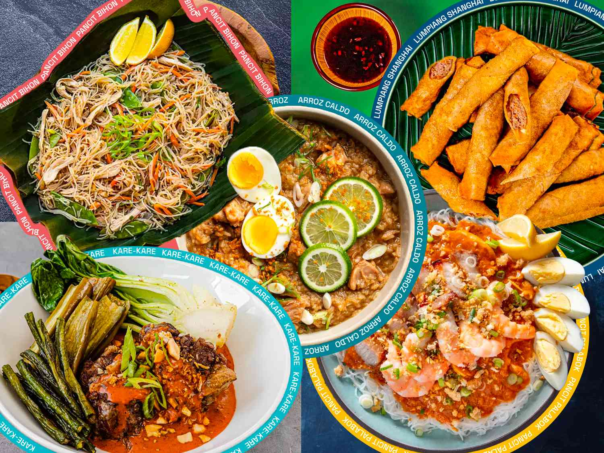

Main Dish
Main dish description here. Main dish description here. Main dish description here. Main dish description here. Main dish description here. Main dish description here.
See recipesSide Dish
side dish description here. side dish description here.side dish description here.side dish description here.side dish description here.side dish description here.
See recipesDessert
dessert description here. dessert description here.dessert description here.dessert description here.dessert description here.dessert description here.
See recipes